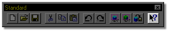

At any time during the course of working in Martin Hash’s 3-Dimensional
Animation, you can get information on specific features by using Help Mode.
At any time during the course of working in Martin Hash’s 3-Dimensional
Animation, you can get information on specific features by using Help Mode.

To enter Help Mode, click the HELP MODE button on the Standard Toolbar, or press Shift + F1. Once in Help Mode, your mouse pointer will change to show an arrow with a question mark next to it. Simply click the item you need assistance with and that help topic will appear on your screen.
What If I Get Stuck?